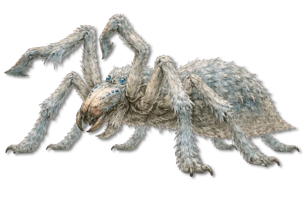

Tundra und kühles Klima
Frosthetzer
Eine an kalten, offenen Untergrund angepasste Jagdlinie, deren Beweglichkeit auch bei Frost erhalten bleibt.
Aleria · Wälder, Hügelland, Ruinen, Steppen und Sumpfränder · Archivblatt IV / VI
Riesenspinnen · Aktive Jagdarthropoden
Schnelle, wendige Einzeljäger mit spezialisierten Greifbeinen und mahlenden Mandibeln, die offenes Jagdterrain patrouillieren und aussichtslose Kämpfe meist vermeiden.

„Solange sie jagen, was wir nicht jagen wollen, lassen wir sie laufen.“Verbreitete Regel der Randdörfer
Sechs Merkmale · Skala 1–10
Die Bewertung beschreibt die Gattung im direkten Einzelkontakt. Ihre Jagdintelligenz und Mobilität sind ausgeprägt, ihre leichtere Panzerung bleibt jedoch verwundbar.
Quelle der Einordnung: Aus Laufgeschwindigkeit, Beutewahl, Greifapparat, Gift und Rückzugsverhalten abgeleitet
Raub- und Laufspinnen sind keine Fallensteller und keine Revierarchitekten. Sie sind Jäger auf Beinen, die ihr Gebiet aktiv patrouillieren.
Sie können Beute und Gegner einschätzen und meiden Auseinandersetzungen, die keinen Gewinn versprechen. In vielen Regionen gelten sie daher weniger als Monster denn als unangenehme Nachbarn, die geduldet werden, solange ihre Jagd nützlich bleibt.
Das auffälligste Merkmal sind die massiven Mandibeln. Ihre inneren Strukturen arbeiten wie ein Mahlwerk: Fleisch wird nicht gerissen, sondern zerkleinert.
Die Gattung ist anpassungsfähig und bewohnt Wälder, Hügelland, Ruinen, Steppen und die Randzonen von Sümpfen. Enge Höhlen meidet sie; für ihre Jagd braucht sie freie Laufwege und nahe Rückzugsorte.
Regionale Linien unterscheiden sich vor allem durch Färbung, Beutewahl und die Art des Untergrunds, auf dem ihre Beine sicheren Halt finden.
Raub- und Laufspinnen leben und jagen überwiegend allein. Seide dient nur der Neststruktur, Paarungsvorbereitung und gelegentlichen Reviermarkierung.
Diese Spinnen sind keine typische Plage, sondern ein ökologisches Werkzeug. Sie verringern örtlich die Zahl anderer Jäger und problematischer Kreaturen. Einzelne Tiere können Menschen töten, handeln dabei jedoch aus Gelegenheit und nicht aus anhaltender Angriffslust.
Im direkten Kontakt setzen sie auf Geschwindigkeit, Greifbeine und Lähmgift. Ihre Panzerung ist leichter als die anderer Riesenspinnen. Verlieren sie Tempo oder Überraschung, suchen sie gewöhnlich einen freien Fluchtweg.
Ein enger Kreis aus mehreren Gegnern nimmt ihnen ihren wichtigsten Vorteil. Unübersichtliches Gelände dagegen erlaubt schnelle Seitenwechsel und erneute Sprungangriffe.
Die Brutpflege ist gering. Weibchen sichern ihr Nest nur kurze Zeit; danach sind die Jungtiere auf sich gestellt. Wo reichlich Nahrung vorhanden ist, können Bestände rasch anwachsen und müssen gezielt zurückgedrängt werden.
Raub- und Laufspinnen sind kein klassisches Jagdziel. Siedlungen betrachten sie zwiespältig: Sie beseitigen Schädlinge und andere Räuber, werden bei Überpopulation aber vertrieben oder bejagt.
Die charakteristischen Mahlmandibeln werden vereinzelt als Trophäen getragen. Einen regelmäßigen Handel mit Körperteilen gibt es nicht; meist steht die Bestandsregulation im Vordergrund.